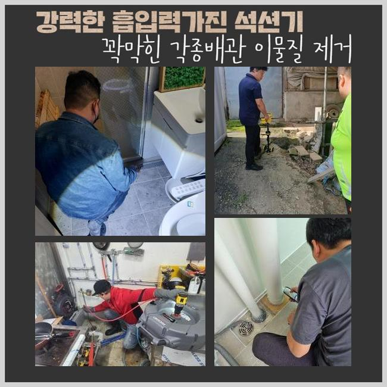
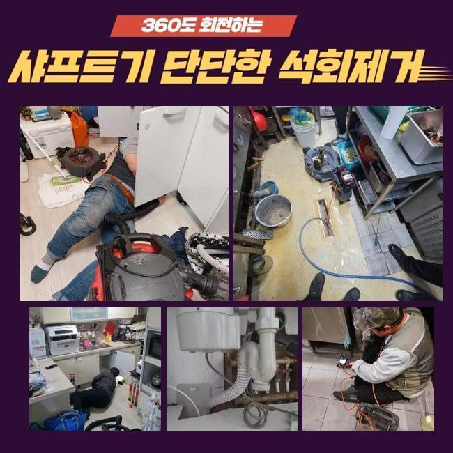
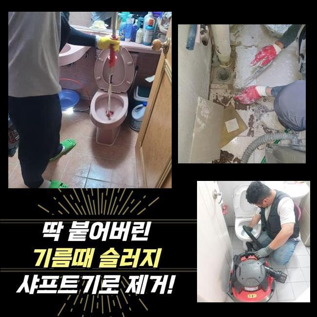
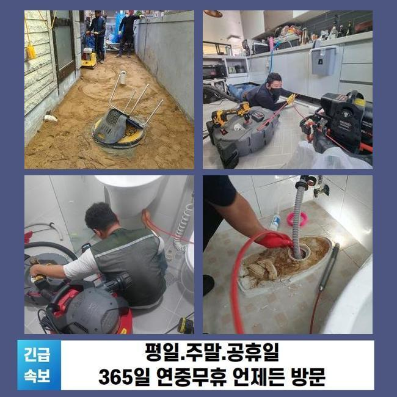

🏠 성남 상대원동변기뚫음 중앙동 맨홀역류 설비출장
성남 원동 변기막힘 전문 시공 후기

📋 작업 개요
- 위치: 성남 원동, 원동, 성남
- 서비스 유형: 변기막힘, 하수구막힘, 배관막힘, 맨홀막힘, 역류해결, 뚫는업체, 배관청소
- 작업 일시: 2025. 1. 10. 22:56
- 업체명: 하수구수사대 (010-5615-2118)
🔍 문제 상황
성남 상대원동변기뚫음 중앙동 맨홀역류 설비출장
하수를 쓰다 보면 다수의 원인으로 인해 관로에 노폐물들이 축적될 수 있는 사안입니다
노폐물이 점점 양을 불리면 견고한 물체로 말라붙을 수 있어서 잘 떨어지지도 않습니다
한 몸처럼 결합되어진 노폐물을 박박 긁어내는 등 힘 줘서 대응하다가는 배수로 어딘가에 구멍이 나는 문제점까지 야기하게 됩니다
무엇이 잘못됐는지 식별되는 그러한 상황이라고 해도 배관용으로 출시된 장비를 활용해서 처리를 해줘야만 결함없이 말끔하게 배관로를 닦아낼 수 있습니다!
셀프 조치를 한다면 전체적인 문제를 모조리 잡아내기 힘들고 이렇다할 변화가 없을 수 있어요
이번 케이스는 다수의 가구원이 계신 곳으로 오염된 물이 밀려와서 습하고 냄새까지 유발되어 제약이 정말 많다고 요청해 주셨습니다
신속히 서둘러서 시공에 적용할 장치를 갖고 초인종을 눌렀습니다
문제를 간략하게 듣고서 사태를 확인해 보니 바닥 배수구에서 심지어 물이 분출되는 상황이더라고요
저희를 찾기 전에 유통되는 배관 청소제로 여러모로 힘써 보았지만 크게 개선되지는 않은 채 유지되었다고 해요

🔎 원인 분석
💡 전문가 진단: 정밀 진단 장비를 사용하여 슬러지의 고착 여부를 판명하고 타격/세척 작업을 실시했습니다.
역류까지 가중되니까 악취까지 상당해서 식사하는 중에도 시간을 보내고 계셨다고 합니다
이런 막힘사태를 완벽하게 없애서 재발이 없게끔 하려면 어떤 것이 원인이 되어 하수의 소통 장애가 만들어 졌는지 확고하게 사유를 판단해 보아야 합니다
그러므로 사전에 누락없이 챙겨온 내시경을 안으로 넣어서 내측의 현황을 봐줬습니다
조금씩 이동하며 스크린을 주시하면서 무슨 문제인지 판별해 보았더니 물이 빠져나가는 경로 도중에 유분이 잔뜩 결합된 대상물이 주범이라고 유추할 단서를 얻게 됐습니다
한몸처럼 일체화가 진행된 기름 덩어리를 타격해서 떨어뜨리려고 한다면 배관 벽체에 스크래치가 출현할 수 있습니다
안전하게 처리를 해주는 기구를 동원하는 것이 안정성이 더 높은 솔루션입니다
이렇게 내부 탐방을 통해서 인지한 배관 관련 내용을 소상히 전달드리고 청소에 최적화된 장비를 가동하여 청소해 나갔습니다
고압의 물을 활용한 작업이 수행됐으며 웬만큼 깨끗하게 만들고서 진행을 잠깐 멈췄던 내시경의 기능을 통하여 변화한 컨디션을 체크했습니다
꿈쩍 않던 하수가 움직이는 것을 목격했지만 청소 절차가 더 들어가야 했으므로 진행을 잠깐 멈췄던 정화 활동을 지속했습니다
통수를 가로막던 유지방이 풀리고 장애물이 온전히 사라졌단 것을 체크하고서 시공을 완수할 수 있었네요

🔧 작업 과정
끝났다고 말씀드리기 전에 내부 환경을 들여다보니 유분기가 남김 없이 전량 청소가 완료되어 파이프 안이 화사하게 밝아진 상태임을 알게 됐습니다
파이프라인의 사이에서 벽체와 하나로 합체되어 있었던 기름덩어리의 존재감이 막대하다고 초기에는 생각했었지만 또다른 도구들을 다시 세팅하지 않아도 사태가 마무리 되어서 시간을 아낄 수 있었어요
만일 이와 같은 슬러지가 아니고 석회가 원인이 되어서 고장이 탄생했다면 이것처럼 쉬운 하나의 작업으로는 끝내기 힘들어요
굳어진 석회 덩어리가 방해하고 있는 현장이라면 장비부터 적용하지 말고 이전에 견고한 석회가 쪼개지게끔 용해제로 전처리를 합니다
이렇게 연화시키는 약물을 넣은 뒤에 관찰하면 거품이 한껏 부푸는데 하수도로 물을 점차 내려보내면서 경과를 보고 있으면 해체가 이루어지면서 성질이 연하게 변합니다
이러한 용액의 경우에는 일반적인 가정에서 바로바로 사진 못하니 석회가 자리한다는 사실을 인지하셨으면 혼자가 아닌 하수구 전문 서비스를 받아야만 만족을 얻을 수 있을 겁니다
관로 청소를 해주는 액체로 물길을 뚫어 보려는 사람도 있겠지만 장애물이 석회인 상태면 시중의 제품군으로는 미처 해결하지 못해요
하수관의 불통이 빚어지는 사유는 짐작하기 힘들기 때문에 큰 고민없이 뚫으려 하지 않고 먼저 내시경을 우선 배치하여 오염된 측면들을 모두 평가해야 정확도 높게 배관로를 닦아낼 수 있습니다!
육안으로 판별해서는 여러 갈래길로 나뉘는 배수로 전체를 분석하기 까다롭습니다
내시경 기기를 바탕으로 상태를 점검하는 것이 빠져서는 안 됩니다
막힘이 생겨버리는 건 며칠만에 생기는 현상이 아니고 오래 시설이 작동하면서 물에 쓸려간 파편과 입자들이 지속적으로 누적되다가 견고한 결합체로 변성될 수 있습니다
완전한 불통이 되기 전에 철저히 케어하는 게 바람직한데 예를 들면 일정한 시기마다 온수를 하수구 구멍에 부으면서 뭉쳐있는 노폐물 덩어리가 떠내려 가도록 한번씩 풀어주면 좋아요
굵은 입자의 쓰레기가 빠져버리지 않도록 촘촘한 필터나 트랩을 씌우고 쓰시는 게 좋은 예방책입니다
보편적인 주택을 포함하여 영업장이나 상가 등 생활용수를 공급받는다면 이와 같은 하수구에 대한 현상에 봉착할 수 있습니다
폐수과정이 더뎌졌다는 사실을 알게 됐으면 상황이 더 꼬이기 전에 올바른 조치로 개선해야 합니다
막힌 상황이 고착화되면 역류 현상이 불가피해지고 심각한 악취를 비롯한 트러블을 감내해야 합니다


✅ 작업 완료
역행이 한번 생겨버리면 인접한 아래층까지 피해가 빚어질 수 있으며 피해를 수습하기 위한 금액도 스스로 부담해야 할 수 있거든요
관로에 이물이 빠지지 않도록 세심하게 설비를 관리 해주셔야 도움이 될 겁니다
이런 방식으로 평소 모범적으로 시설물을 이용하신다고 해도 어느순간 배수 장애가 어느순간 생길 수 있습니다
흐름이 곧 괜찮아지겠거니 간과하지 마시고 저희 측에 하수 시스템의 지원을 해달라고 연락주시면 됩니다!


⚠️ 하수구 배관 막힘 예방 및 관리 가이드
- ✅ 머리카락, 비닐, 물티슈 등 물에 분해되지 않는 이물질은 하수구 유입을 절대 금지해 주세요.
- ✅ 하수구 거름망을 씌우고 모여진 이물질은 주기적으로 쓰레기통에 바로 비워주셔야 합니다.
- ✅ 배관 노후가 심할 경우 이물질이 더 쉽게 걸리므로 주기적인 배관 세척(고압세척 등)을 권장합니다.
- ✅ 작업 후 1년 이내 재발 시 하수구수사대에서 무상 A/S 보증 서비스를 제공합니다.
💡 핵심 정리
- 확실한 장비 작업(내시경 점검 및 샤프트 스케일링)으로 원인을 뿌리 뽑습니다.
- 작업 후 1년 이내에 동일한 부위 재발 시 100% 무상 A/S 서비스를 보장합니다.
- 서울 · 경기 · 인천 전 지역에 24시간 언제든 긴급 출동할 수 있도록 항시 대기 중입니다.
❓ 자주 묻는 질문 (FAQ)
🚨 성남 원동 변기막힘 문제로 고민이신가요?
정확한 원인 진단과 확실한 시공으로 재발 없는 해결을 약속드립니다.
24시간 긴급 출동 | 서울 · 경기 · 인천 전지역 | 1년 내 재발 시 무상 A/S